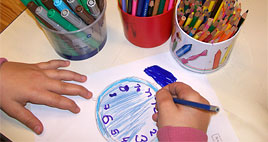
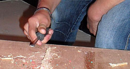
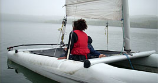

|
Présentation unité éducative |
 |
|
Dimanche, 05 Décembre 2010 11:25 |
|
|  |
Le groupe éducatif S.A.A. (service accueil adolescents) est constitué de 5 professionnels et un professeur des écoles pour accompagner des adolescents entre 12 et 18 ans.
Le service S.A.E. (service accueil enfants) développe le travail de partenariat avec les différents services de soins (CMP, CATTP, hôpitaux de jour), les établissements scolaires et les services sociaux du département. Un psychomotricien, 2 psychologues, 1 professeur d’EPS, 1 médecin psychiatre, un médecin pédiatre et une infirmière participent également à la prise en charge des enfants du service.
|
|
Le service E.P.S. (éducation physique et sportive) vient renforcer les apprentissages.Non seulement la pratique d'un sport apporte des bienfaits physiques, mais il est reconnu comme un véritable facteur d'intégration sociale.
|
|  |
L’unité éducative se décline en plusieurs services avec chacun des projets adaptés mais tous visent à une meilleure intégration sociale et professionnelle de chaque individu |
 |
|
Projets du Service Accueil Adolescents :
- Renforcer la professionnalisation de l’unité pré professionnelle et pédagogique,
- Ouvrir à des formations nouvelles, application par des stages
- Développer les accueils séquentiels de jour,
- Conforter le partenariat avec les unités pédagogiques d’intégration,
- Renforcer la compétence professionnelle au regard des populations présentant des troubles envahissants du développement,
- Redéfinir le contenu et la mission des stages.
Projet du Service Accueil Enfants :
- Développer le travail de partenariat avec les différents services de soins (CMP, CATTP, hôpitaux de jour), les établissements scolaires et les services sociaux du département.
- Renforcer l’accueil séquentiel en fonction de projets individualisés.
- Favoriser un passage harmonieux vers le SAA en préparant les jeunes au cours de la dernière année.
Projet du Service E.P.S. :
- Développer l’intérêt, la participation et la capacité d’attention.
- Renforcer les capacités relationnelles (communication avec l’adulte et avec les autres jeunes)
- Développer les capacités cognitives par la compréhension des consignes, la mémorisation, analyse et adaptation aux situations ainsi que la capacité à réutiliser les acquis.
- Développer les capacités motrices par la manipulation d’objets et l’adresse observée dans différentes situations.
- Renforcer la connaissance du schéma corporel (latéralisation, coordination des mouvements, agilité, aisance motrice
|
 |
|
|
Mise à jour le Jeudi, 22 Octobre 2015 18:38 |